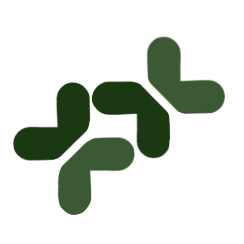

Q: How does this work?
Q: 怎么回事？
A: CAO is a token made on SmartBCH by im_uname#100 (@im_uname on twitter). There are 1 billion tokens. 500 million are paired with 2 BCH for liquidity by im_uname split between Benswap and Mistswap. Each month he'll sell an additional 5 million tokens for BCH on a random day.
A: 草币是im_uname#100(@im_uname on twitter)在SmartBCH上发的一代币，总量为十亿枚，其中五亿搭上两枚BCH在benswap和mistswap提供流动性。每个月本人将随机选一天抛售五百万枚，抛完为止。
Q: What is the token address?
Q: 代币地址是啥？
A: 0x8358758D3952A0146560F3584d3b219ed631E1ea
Q: What is the purpose of this coin?
Q: 发这币的目的是什么？
A: So im_uname can have more BCH.
A: 我觉得我的BCH不够，得多整点
Q: Does this benefit humanity in any way?
Q: 搞这个对社会对人类有什么好处吗？
A: I am a human, therefore it benefits humanity.
A: 我是人类，所以对人类有好处。
Q: Is there any tokenomics thing going on? Buybacks, burns, staking, something to support the price?
Q: 你不做点什么来支持币价吗，回购、销币、质押什么的？
A: No.
Q: How are you gonna use the BCH from selling tokens?
Q: 你换了这些BCH来做甚？
A: General BCH stuff and videogames.
A: 各种BCH相关事务，估计也会买点游戏吧
Q: Do we get a say on which things you use it for?
Q: 我们对你怎么花这些BCH总有发言权吧
A: No. You'll hear them in updates though.
A: 并没有，但我花钱时会告诉你
Q: What happens when you sell all your tokens?
Q: 你存货卖完了之后会怎样？
A: Then the organization becomes decentralized.
A: 这不就去中心化了吗
Q: Is this a satire on DAOs?
Q: 你这是在碰瓷DAO吧？
A: Who told you that, I'll never do that.
A: 坚决否认
Q: What does the logo signify?
Q: 这图什么意思？
A: See the green blobs? To the right is you, to the left is me, you are giving me BCH.
A: 右边是你，左边是我，你在给我BCH
Q: 你这缩写和logo是在玩烂梗吧？
A: 说啥呢，绝无此事
Q: 这烂梗有些不雅吧？
A: 再说一次，哪有什么烂梗，想多了
Q: What are the Chinese questions saying? Something about bad chinese puns?
A: Don't worry about them.
Q: This sounds like what Ripple is doing.
Q: 好像瑞波币不就在干这事？
A: Anything you suspect is pure coincidence.
A: 如有雷同，纯属巧合
Q: Can I at least get an airdrop?
Q: 大老给个空投？
A: No.
Q: This looks like a shameless cashgrab.
Q: 你这不抢钱吗
A: Excuse me, it's an HONEST shameless cashgrab.
A: 童叟无欺，你情我愿，何抢之有？
Q: What if you rug us?
Q: 你不会割我们韭菜吧？
A: I sell 5 million tokens every month.
A: 我每个月得卖五百万枚的，已经在割了
Q: Why is the telegram channel announce-only?
Q: 官方tg群怎么不让发言？
A: So you can be spared from reading worthless messages from people asking for airdrops.
A: 让发言还得了，都是求空投的烦死了
Q: I want to talk about it! Can I make my own groups?
Q: 我还是想讨论你这币，能自己建群吗
A: Sure. Please do not invite me though.
A: 请随意，别邀我就行
Q: This is on SmartBCH, I only have good old fashioned BCH. How do I convert between them?
Q: 这是smartBCH侧链上的吧，我只有传统的主链BCH，怎么转过去？
Q: I don't have any BCH.
Q: 我没BCH怎办
A: That is unacceptable. Buy some immediately at your local exchange.
A: 没BCH还不赶紧买？
twitter telegram noise read.cash